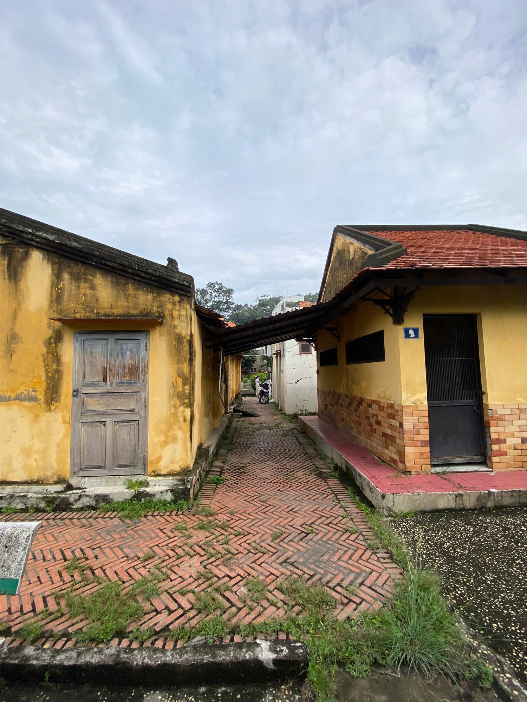
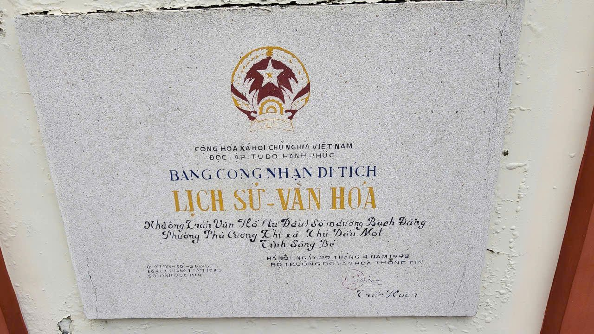

Hành trình trăm năm
Câu chuyện lịch sử
Khởi dựng
Ngôi nhà được khởi dựng vào năm Canh Dần (1890) trên khuôn viên rộng 1.296 m², mang đậm dấu ấn kiến trúc nhà rường Nam Bộ. Đoạn văn này là nội dung placeholder — vui lòng thay bằng tư liệu lịch sử đã được xác minh về quá trình khởi dựng công trình.

Biến động lịch sử
Trải qua nhiều thập kỷ biến động, ngôi nhà là chứng nhân của nhiều sự kiện lịch sử quan trọng của vùng đất Thủ Dầu Một. Đoạn văn này là nội dung placeholder — vui lòng thay bằng tư liệu lịch sử thật về giai đoạn này.

Trùng tu & bảo tồn
Được công nhận là di tích kiến trúc nghệ thuật cấp Quốc gia ngày 07/01/1993, công trình tiếp tục được gìn giữ qua các đợt trùng tu. Đoạn văn này là nội dung placeholder — vui lòng thay bằng tư liệu thật về công tác bảo tồn.